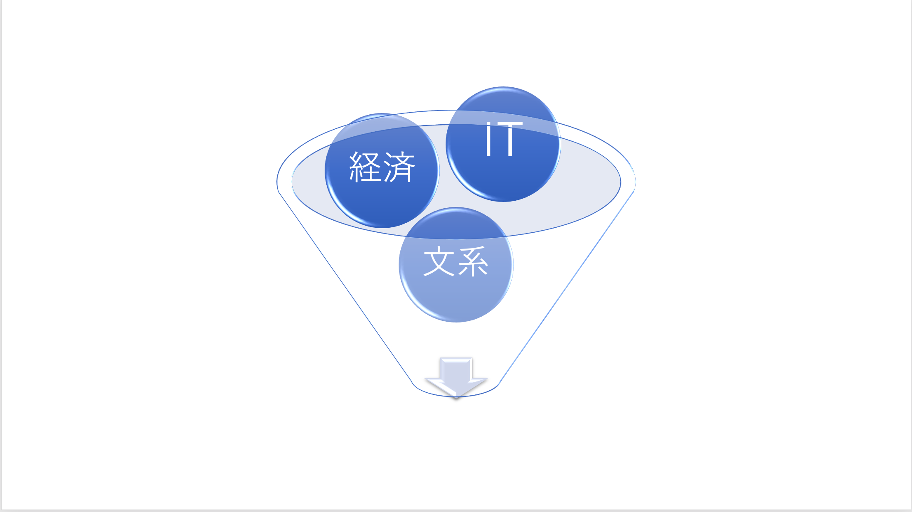

“宮崎ゼミって何しているの？？”
ITゼミって言われている宮崎ゼミ。では実際には何をしているのでしょうか？
年代別にどんなことをしているのか紹介していきます。
ーWEBサービスやアプリケーションの市場調査ー
実際に使われているウェブサイトやITサービスの、「市場の動向」や「目的」「仕組み」などを研究します。
▶️▶️２４期では「世界と日本の違い」という観点でIT市場について調べ、その違いを通じてITへの視野を広げ、理解を深めました。
ーウェブサイトの企画ー
調査結果をもとに、今のインターネットに必要なサービスを考え、「コンセプト」「ターゲット」「デザイン」「内容」など全て自分たちで企画します。
▶️▶️２４期では「どのように日本人に日本では流行していないサービスを伝えるか」というコンセプトのもと自分たちでウェブサイトを企画しました。
ーウェブサイト作成ー
企画したウェブサイトを実際に作成します。演習関連科目で学ぶ「HTML５・CSS３」というプログラミングの基本を利用します。
▶️▶️２４期生は「世界の常識」「プログラミングHow toサイト」「24期生の紹介」という項目で3つのウェブサイトを作成しました。
ーアプリケーションの企画開発ー
実際に「利用者」を想定し、UXやUIを考えながらアプリケーションを企画・開発します。
▶️▶️今年度は「東京公共交通オープンデータチャレンジ」への入賞を目指しています。過去の入賞作品を調べ、社会課題を考えることで必要とされるアプリケーションを模索中です。
ービジネスアイデアコンテストへの参加ー
毎年企業と大学が主催するビジネスアイデアコンテストに参加しています。今年は大丸京都店と共同主催。昨年度はコロナウイルスのため中止でしたが、一昨年は２２期の１班が準優勝しました。
ーディベート大会への参加ー
毎年大学で開催されるディベート大会に参加します。
ーゼミ生募集活動ー
ゼミ選考時に、「宮崎ゼミを知ってもらうため」「志望していただくため」に必要とされているものや、魅力を伝える工夫を考えつつ広報活動しています。
▶️▶️今期は、「ゼミ見学」「ゼミ説明会」「パワーポイント」「グループ質問会」「SNS(インスタ・Twitter)による広報」など様々なものを用意しているので、ぜひ活用して宮崎ゼミの魅力を知っていただきたいです。
卒業研究では、情報システムの分野で研究テーマを設定し、成果を個人またはグループでまとめます。
具体的には、（1）情報化社会の動向調査、（2）情報システムの実態調査、（3）情報システムのシステム分析、（4）情報システムの構築などのテーマが考えられます。
▶️▶️昨年度の研究では、「AIにおける立法」や「自己肯定感向上のためのAI応用」と言った難しそうなものから、「ゴキブリとAI」や「人とアンドロイドの恋愛」と言ったユニークなものまで、個性的で素晴らしい卒業研究がみられました。
何をやっているのかわかったような。。。
でも正直ちょっと実感はわかないですよね？
1年間見てきた、実際にやることや感想をだらだらとかいてみます。
この中から何かしら感じてくれたら嬉しいです。
せっかくかいたので、もうちょっと見てってください〜
上では活動内容をこむずかしく紹介しました。だからここでは実感がわきやすいように、普段どんなことしてるかをお伝えします。また、UXやUI、プログラミングなどの専門用語や意味のわからない言葉がたくさん出てきたので ここではカタカナを使わずに「分かりやすく」説明します。
活動のうちの大半はぐるーぷわぁくです。。
2年次では宮崎先生から押しつけられた 頂戴したてぇまについてぐるーぷで調査し、作成したうえぶさいとを用いて毎週発表します。
「え、私ぷろぐらみんぐに自信がない」「僕デザイン感覚皆無」という人もいます。
しかし安心してください。もちろんぐるーぷでの活動なので、一人で全てやるわけではなく分担し協力することができます。（しかしぐるーぷならではの難しさも・・・）
班で調査、作成、発表をして、先生からあどばいすやだめ出しをいただき、再調査、再作成・ときには方針転換・・・
というようになんとかかんとか自分たちでうえぶさーびすを作成してきました。
３回生でも内容は違ど、作成→発表→ふぃいどばっく→再作成→発表というようにぐるーぷわぁくを進めていきます。
正直他のぜみと比べるとたすくが多く、ぐるーぷわぁくのためにぜみ時間外の拘束時間も長いと思います。ぷれぜんのすぱんも短いので
ぐるーぷであぽいんとめんとをとり、あらいあんすを組み、あじぇんだを決め、活動にこみっとする、などやることも多くあります。(このような言葉は使わないので安心してね)
だから気軽に単位が欲しいだけの人、とりあえず人気ぜみに入りたい人には向いていないです。(気軽に単位をとることはいいことだけど、違う科目でやろう。僕みたいに)
しんどい、、ぐるーぷわぁくって大変、、と思うこともありますが、
就活や社会で役に立つぐるーぷわぁくを経験できること、真剣にやりがいのあるぜみ活動に取り組
めること、個性が光る仲間と活動すること、は大学生の今しかできない、宮崎ぜみでしかできないことのように感じます。
あ、あと宮崎先生は「ぜみは授業とは違って自分から参加するもの」と言っていました。僕もちょっとずつわかってきたような気がします。
ゼミ生一同「宮崎ゼミの魅力」と「カタカナの必要性」を理解した皆さんをお待ちしてます。